Inferencia 1: Fundamentos
Completar hasta as 11:59 PM del martes, 5 de septiembre de 2023
Objetivo de la práctica
El objetivo de esta guía práctica es aproximarnos a los fundamentos de la inferencia estadística, reforzando los contenidos respecto a sus conceptos centrales. Además, graficaremos la curva normal y calcularemos el puntaje z.
En detalle, aprenderemos:
- Los conceptos centrales de la inferencia estadística
- Qué es la curva normal y como graficarla
- Qué es y cómo calcular el puntaje \(Z\)
Nota
Acaso un déjà vu?
¿Algo de esto nos suena conocido?
¿Recuerdan lo que vimos en Estadística Descriptiva respecto a inferencia?
En las sesiones 7 y 8 del laboratorio de análisis de datos pueden repasar.
Recursos de la práctica
En esta práctica trabajaremos con un subconjunto de datos previamente procesados del Estudio Longitudinal Social de Chile (ELSOC) del año 2016, elaborado por COES. Para este ejercicio, obtendremos directamente esta base desde internet. No obstante, también tienes la opción de acceder a la misma información a través del siguiente enlace: ELSOC 2016. Desde allí, podrás descargar el archivo que contiene el subconjunto procesado de la base de datos ELSOC 2016.
Conceptos centrales
Repasemos algunos de los conceptos fundamentales para la inferencia estadística vistos en la sesión 5, y algunos otros.
Prestemos atención a la siguiente imagen ¿dónde se inserta lo que vimos en estadística descriptiva? ¿Pueden definir todos los conceptos que se mencionan?
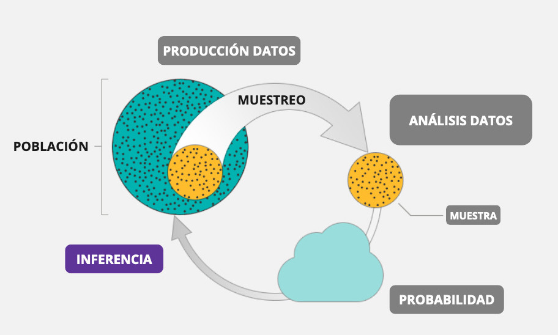
Vamos parte por parte.
1. Población: Corresponde al grupo entero de individuos sobre el que queremos información.
2. Muestra: Es un subconjunto de la población. Es la parte de la población que realmente examinamos con el objetivo de obtener información.
3. Parámetro: es un número que describe la población. En la práctica estadística el valor del parámetro no es conocido ya que no podemos examinar toda la población.
4. Estadístico: es un número que se puede calcular a partir de los datos de la muestra sin utilizar ningún parámetro desconocido. En la práctica, solemos utilizar un estadístico para estimar el parámetro desconocido.
| Población (parámetro) | Muestra (estadístico) | |
|---|---|---|
| Promedio | \(\mu\) | \(\bar{x}\) |
| Varianza | \(\sigma²\) | \(s²\) |
| Desviación estándar | \(\sigma\) | \(s\) |
| Correlación | \(\rho\) | \(r\) |
5. Inferencia: La inferencia estadística proporciona métodos que permiten sacar conclusiones de una población a partir de los datos de una muestra.
6. Error de muestreo: diferencia entre el valor calculado de un estadístico de la muestra y el valor real de un parámetro de la población.
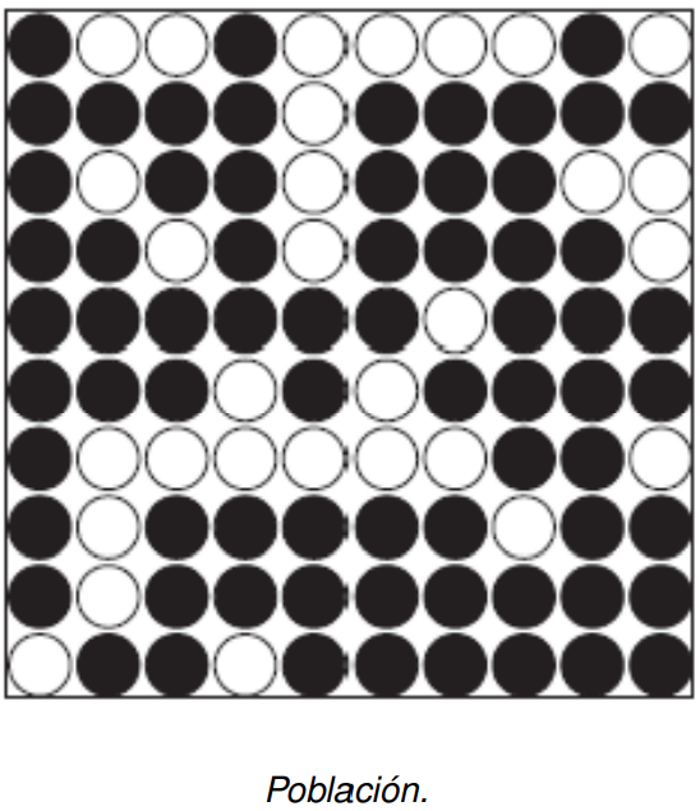
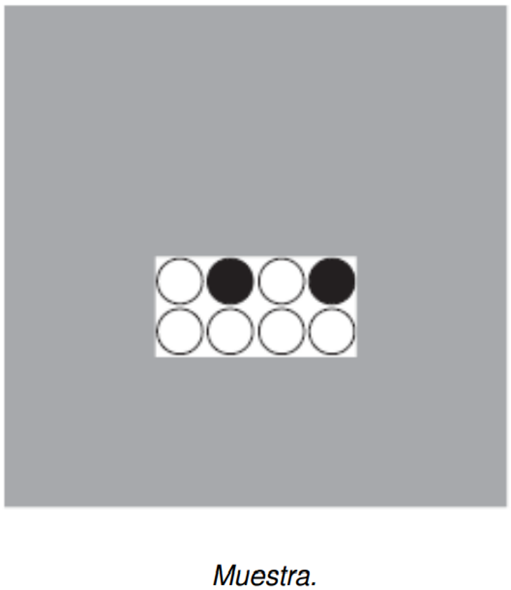
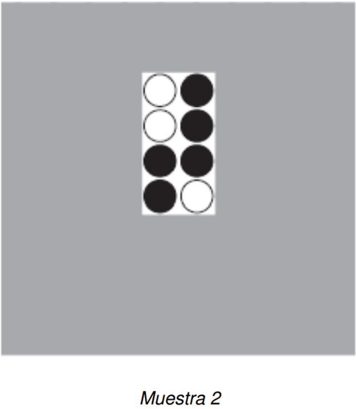
7. Variabilidad muestral: el valor de un estadístico varía en un muestreo aleatorio repetido.
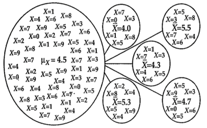
8. Aleatoriedad: Llamamos a un fenómeno aleatorio si los resultados individuales son inciertos y, sin embargo, existe una distribución regular de los resultados después de un gran número de repeticiones.
9. Probabilidad: es la proporción de veces que el resultado se da después de una larga serie de repeticiones.
10. Distribución: se refiere al conjunto de todos los valores posibles de una variable y las frecuencias (o probabilidades) con las que se producen.
Curva normal
La curva normal es un tipo de distribución en la que la frecuencia con la que ocurren los valores de la variable se asemeja a una campana. Esto quiere decir que se presenta una menor frecuencia de observaciones para los valores mayores y menores de la variable, y una mayor frecuencia de observaciones para aquellos valores que se encuentran hacia el centro de la distribución.
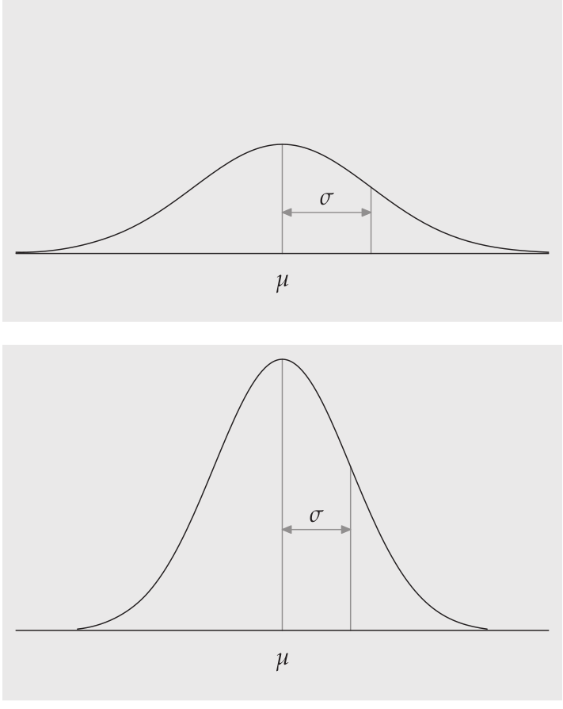
Nota
¿Cuáles variables te imaginas que se pueden distribuir de manera normal?
Esto tiene algunas implicancias cuando nos acompañamos de la probabilidad.
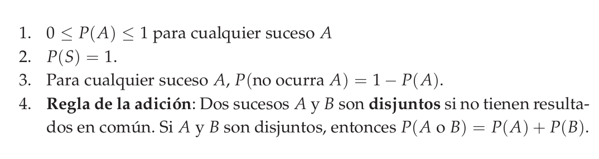
En una distribución normal de media \(\mu\) y desviación estándar \(\sigma\):
El 68% de todas las observaciones se encuentran dentro del intervalo µ ± σ.
El 95% de todas las observaciones se encuentran dentro del intervalo µ ± 2σ.
El 99,7% de todas las observaciones se encuentran dentro del in- tervalo µ ± 3σ.
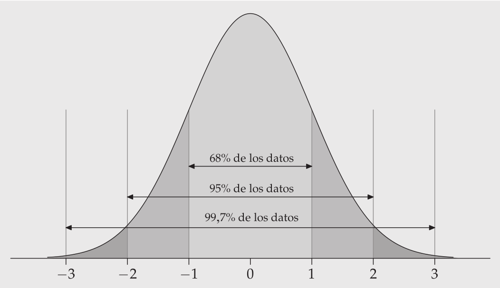
¡Veamos un ejemplo!
Preparación datos
Comencemos por preparar nuestros datos. Iniciamos cargando las librerías necesarias.
pacman::p_load(tidyverse, # Manipulacion datos
sjmisc, # Descriptivos
sjPlot, # Tablas
kableExtra, # Tablas
ggplot2) # Graficos
options(scipen = 999) # para desactivar notacion cientifica
rm(list = ls()) # para limpiar el entorno de trabajoCargamos los datos directamente desde internet (por esta vez).
load(url("https://multivariada.netlify.app/assignment/data/proc/ELSOC_ess_merit2016.RData")) #Cargar base de datosA continuación, exploramos la base de datos proc_elsoc.
names(proc_elsoc) # Nombre de columnas[1] "mesfuerzo" "mtalento" "ess" "edcine" "sexo" "edad"
[7] "pmerit" dim(proc_elsoc) # Dimensiones[1] 2927 7str(proc_elsoc) # Estructura de los datos'data.frame': 2927 obs. of 7 variables:
$ mesfuerzo: num 4 4 2 4 5 3 1 2 3 3 ...
..- attr(*, "label")= chr "Recompensa: esfuerzo"
..- attr(*, "format.stata")= chr "%30.0g"
..- attr(*, "labels")= Named num [1:7] -999 -888 1 2 3 4 5
.. ..- attr(*, "names")= chr [1:7] "No Responde (no leer)" "No Sabe (no leer)" "Totalmente en desacuerdo" "En desacuerdo" ...
$ mtalento : num 4 4 4 4 2 5 1 2 4 5 ...
..- attr(*, "label")= chr "Recompensa: talento"
..- attr(*, "format.stata")= chr "%30.0g"
..- attr(*, "labels")= Named num [1:7] -999 -888 1 2 3 4 5
.. ..- attr(*, "names")= chr [1:7] "No Responde (no leer)" "No Sabe (no leer)" "Totalmente en desacuerdo" "En desacuerdo" ...
$ ess : num 5 5 3 6 4 5 6 7 4 3 ...
..- attr(*, "label")= chr "Estatus Social Subjetivo"
..- attr(*, "format.stata")= chr "%21.0g"
..- attr(*, "labels")= Named num [1:13] -999 -888 0 1 2 3 4 5 6 7 ...
.. ..- attr(*, "names")= chr [1:13] "No Responde (no leer)" "No Sabe (no leer)" "0 El nivel mas bajo" "1" ...
$ edcine : num 1 3 3 5 3 3 3 4 3 3 ...
..- attr(*, "label")= chr "Educación"
..- attr(*, "format.stata")= chr "%43.0g"
..- attr(*, "labels")= Named num [1:5] 1 2 3 4 5
.. ..- attr(*, "names")= chr [1:5] "Primaria incompleta menos" "Primaria y secundaria baja" "Secundaria alta" "Terciaria ciclo corto" ...
$ sexo : num 1 1 1 0 0 0 1 1 0 0 ...
..- attr(*, "label")= chr "Sexo"
..- attr(*, "format.stata")= chr "%8.0g"
..- attr(*, "labels")= Named num [1:2] 0 1
.. ..- attr(*, "names")= chr [1:2] "Hombre" "Mujer"
$ edad : num 64 60 26 51 69 62 54 32 38 46 ...
..- attr(*, "label")= chr "Edad"
..- attr(*, "format.stata")= chr "%21.0g"
..- attr(*, "labels")= Named num [1:2] -999 -888
.. ..- attr(*, "names")= chr [1:2] "No Responde (no leer)" "No Sabe (no leer)"
$ pmerit : num 4 4 3 4 3.5 4 1 2 3.5 4 ...
..- attr(*, "label")= chr "Meritocracia promedio"
..- attr(*, "format.stata")= chr "%30.0g"
..- attr(*, "labels")= Named num [1:7] -999 -888 1 2 3 4 5
.. ..- attr(*, "names")= chr [1:7] "No Responde (no leer)" "No Sabe (no leer)" "Totalmente en desacuerdo" "En desacuerdo" ...
- attr(*, "label")= chr "Estudio Longitudinal Social de Chile. Ola 2016. Version 3.10 (15/04/2019)"Contamos con 7 variables (columnas) y 2927 observaciones (filas).
En esta ocasión, trabajaremos con la variable ‘edad’, para ello, observemos algunos estadísticos descriptivos de resumen de nuestra para esta variable. Utilizaremos la función descr del paquete sjmisc.
sjmisc::descr(proc_elsoc$edad,
show = c("label","range", "mean", "sd", "NA.prc", "n")) %>%
kable(.,"markdown")| var | label | n | NA.prc | mean | sd | range |
|---|---|---|---|---|---|---|
| dd | Edad | 2927 | 0 | 46.09088 | 15.2868 | 70 (18-88) |
Histograma de frecuencias
Primero, realizaremos un histograma de frecuencias o de probabilidad de la variable edad, esto es, la frecuencia con la que se presenta cada uno de los valores posibles de la variable.
ggplot(proc_elsoc, aes(edad)) +
geom_histogram(aes(x = edad, y = after_stat(density)), bins = 50, color = "black", fill = "grey") 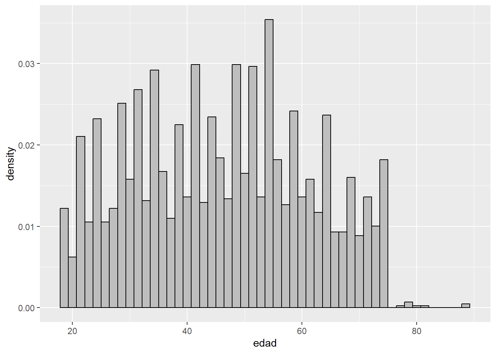
A esto también lo llamamos distribución empírica, y quiere decir que es la distribución que toman los datos reales de nuestra muestra.
Curvas de densidad
Las curvas de densidad son un modelo matemático de la distribución. Lo importante de graficarlo es que nos permite estimar una probabilidad, ya que el área por debajo de la curva, y entre cualquier intervalo de valores, es la proporción de todas las observaciones que están situadas en dicho intervalo.
¡Veamos cómo se ve!
ggplot(proc_elsoc, aes(edad)) +
geom_histogram(aes(x = edad, y = ..density..), bins = 50, color = "black", fill = "grey") +
geom_density(color = "blue")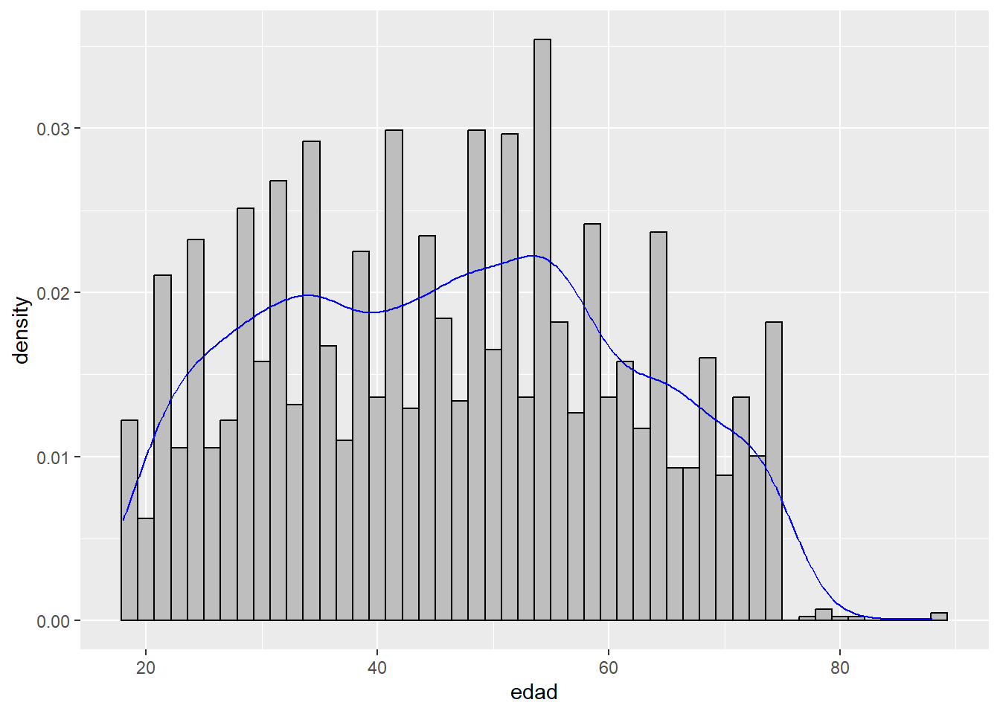
Curva de distribución normal
Ahora, pondremos por encima la curva normal, que funciona como distribución teórica de los datos y nos permite realizar inferencia estadística.
ggplot(proc_elsoc, aes(edad)) +
geom_histogram(aes(x = edad, y = ..density..), bins = 50, color = "black", fill = "grey") +
geom_density(color = "blue")+
stat_function(fun = dnorm, args = list(mean = mean(proc_elsoc$edad), sd = sd(proc_elsoc$edad)))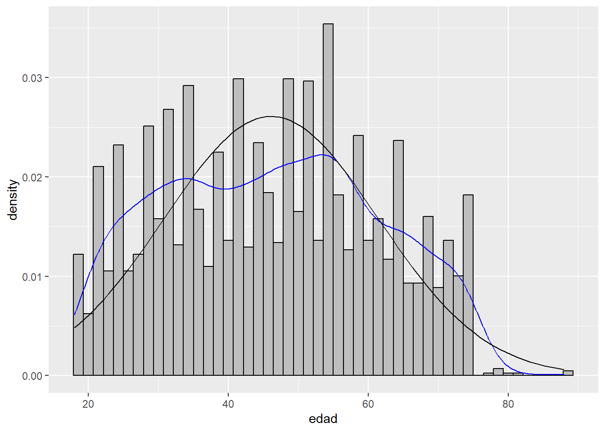
Puntaje z y estandarización
Los valores \(z\), o puntuación estandarizada, permiten calcular la proporción de casos bajo la curva normal que están sobre y bajo el puntaje, al mismo tiempo que estandarizar valores.
Un valor z nos dice a cuántas desviaciones típicas se encuentra la observación original de la media y en qué dirección.
\[z=\frac{x-\mu}{\sigma}\] ## Cálculo de puntaje z
Calculemos el puntaje \(z\) para la edad de cuarenta años, donde:
- \(x\): valor de edad para el que realizaremos el cálculo, en este caso 40 años
- \(\mu\): media de la edad
- \(\sigma\) : desviación estándar de la edad
z <- (40-mean(proc_elsoc$edad))/sd(proc_elsoc$edad)
z[1] -0.3984404Ahora le pedimos que nos entregue el área bajo la curva:
pnorm(-0.398)[1] 0.3453151Esto quiere decir que el 34.5% de las observaciones es menor a 40 años, y que, por consiguiente, el 65.5% se encuentra sobre esa edad.
Pero, qué pasa si quiero hacer la pregunta al revés: ¿Menor a qué edad es el 10% más joven?
qnorm(p=0.1, mean = mean(proc_elsoc$edad), sd=sd(proc_elsoc$edad))[1] 26.50006Esto quiere decir que el 10% más joven es menor a 26.5 años.
Practiquemos
Ahora, realizaremos un breve ejercicio utilizando nuestra base de datos.
- Identificaremos los na’s
- Eliminaremos todos los na’s
- Graficaremos un histograma para Estado social subjetivo (ess), con su curva de densidad, más la curva normal.
- Calcularemos el porcentaje se encuentra por sobre el valor 6
- ¿Por sobre cuál valor se ubica el 30% más alto?
- ¿Por bajo cuál valor se ubica el 30% más bajo?
Resumen
Hoy pudimos recordar y repasar los conceptos fundamentales de la inferencia estadística. Además, pudimos reforzar la idea de distribucón, donde específicamente repasamos el contenido referente a la curva de distribución normal y pudimos graficarla. Además, calculamos el puntaje z y aprendimos acerca de estandarización.
En detalle, aprenderemos:
- Los conceptos centrales de la inferencia estadística
- Qué es la curva normal y como graficarla
- Qué es y cómo calcular el puntaje \(Z\)
Reporte de progreso
Completar el reporte de progreso correspondiente a esta práctica aquí. El plazo para contestarlo es hasta el día viernes de la semana en la que se publica la práctica correspondiente.